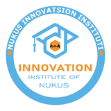
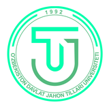
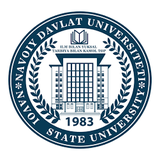
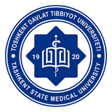
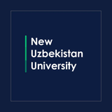
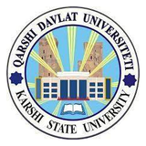
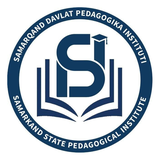

Выпускники
За последние четыре года школу окончили 141 учеников. 131 из них учатся в вузах, 6 — в техникумах.
По годам
- Вуз
- Техникум
- Не указано
Сертификаты выпускников
Сильные результаты открывают дорогу в хорошие вузы.
Рост с каждым годом
Выпускники с сертификатом
Учатся за пределами Каракалпакстана
Медицина и инженерия/IT
Медицина
в 10 учебных заведениях
 Каракалпакский медицинский институт4
Каракалпакский медицинский институт4 Нукусский техникум общественного здоровья № 2 им. Ибн Сины2
Нукусский техникум общественного здоровья № 2 им. Ибн Сины2 Ургенчский государственный медицинский институт2
Ургенчский государственный медицинский институт2
Инженерия и IT
в 8 учебных заведениях
 Нукусский государственный технический университет5
Нукусский государственный технический университет5 Каракалпакский государственный университет им. Бердаха5
Каракалпакский государственный университет им. Бердаха5 Каракалпакский институт сельского хозяйства и агротехнологий1
Каракалпакский институт сельского хозяйства и агротехнологий1
Смотреть по годам
Где они учатся
- Каракалпакский государственный университет им. БердахаНукус62
 Нукусский государственный педагогический институтНукус12
Нукусский государственный педагогический институтНукус12- Нукусский государственный технический университетНукус10

Нукусский инновационный институтНукус4
Узбекский государственный университет мировых языковТашкент4- Каракалпакский медицинский институтНукус4
- Каракалпакский институт сельского хозяйства и агротехнологийНукус3
 Университет военной безопасности и обороныТашкент3
Университет военной безопасности и обороныТашкент3
Все учебные заведения (34)
 Университет инновационных технологийНукус3
Университет инновационных технологийНукус3 Государственный институт искусств и культуры Узбекистана, Нукусский филиалНукус2
Государственный институт искусств и культуры Узбекистана, Нукусский филиалНукус2
Навоийский государственный университетНавои2- Нукусский техникум общественного здоровья № 2 им. Ибн Сины техникумНукус2
 Ташкентский государственный экономический университетТашкент2
Ташкентский государственный экономический университетТашкент2- Ургенчский государственный медицинский институтУргенч2

Ташкентский государственный медицинский университет, Чирчикский филиалТашкент2 Приаральский медицинский и транспортный техникум техникумНукус2
Приаральский медицинский и транспортный техникум техникумНукус2 Государственный институт искусств и культуры УзбекистанаТашкент1
Государственный институт искусств и культуры УзбекистанаТашкент1- University of Business and Science, Ташкентский филиалТашкент1
- Техникум №3 Кегейлийского района техникумКегейли1
 Ташкентский филиал НИЯУ МИФИТашкент1
Ташкентский филиал НИЯУ МИФИТашкент1 Ташкентский университет информационных технологий им. аль-ХорезмиТашкент1
Ташкентский университет информационных технологий им. аль-ХорезмиТашкент1 Национальный университет Узбекистана им. Мирзо УлугбекаТашкент1
Национальный университет Узбекистана им. Мирзо УлугбекаТашкент1 Самаркандский государственный медицинский университетСамарканд1
Самаркандский государственный медицинский университетСамарканд1
Университет «Новый Узбекистан»Ташкент1- Нукусский техникум общественного здоровья № 1 им. Ибн Сины техникумНукус1
 Государственный университет «Cyber University»Ташкент1
Государственный университет «Cyber University»Ташкент1
Каршинский государственный университетКарши1 Андижанский государственный медицинский институтАндижан1
Андижанский государственный медицинский институтАндижан1 Самаркандский университет ветеринарной медицины, животноводства и биотехнологий, Нукусский филиалНукус1
Самаркандский университет ветеринарной медицины, животноводства и биотехнологий, Нукусский филиалНукус1
Самаркандский государственный педагогический институтСамарканд1 Наманганский государственный университетНаманган1
Наманганский государственный университетНаманган1 Ургенчский государственный университет им. БеруниУргенч1
Ургенчский государственный университет им. БеруниУргенч1 Технологический университет RANCH, Нукусский кампусНукус1
Технологический университет RANCH, Нукусский кампусНукус1 Термезский государственный университетТермез1
Термезский государственный университетТермез1
Выбранные направления
- Экономика и бизнес30 · 22%
- Языки и филология23 · 17%
- Математика и естественные науки20 · 15%
- Медицина17 · 12%
- Инженерия и IT16 · 12%
- Право, история и социальные науки15 · 11%
- Педагогика и психология13 · 9%
- Военное дело3 · 2%
По всему Узбекистану
29 выпускников учатся в вузах за пределами Каракалпакстана.
Вузы за пределами Каракалпакстана
Где они учатся
- Каракалпакский государственный университет им. БердахаНукус5
- Нукусский государственный технический университетНукус4
- Государственный институт искусств и культуры Узбекистана, Нукусский филиалНукус1
- Навоийский государственный университетНавои1
- Нукусский техникум общественного здоровья № 2 им. Ибн Сины техникумНукус1
- Государственный институт искусств и культуры УзбекистанаТашкент1
- Нукусский государственный педагогический институтНукус1
Выбранные направления
- Инженерия и IT4 · 29%
- Экономика и бизнес3 · 21%
- Право, история и социальные науки2 · 14%
- Математика и естественные науки2 · 14%
- Педагогика и психология1 · 7%
- Медицина1 · 7%
- Языки и филология1 · 7%
По всему Узбекистану
2 выпускников учатся в вузах за пределами Каракалпакстана.
Вузы за пределами Каракалпакстана
Где они учатся
- Каракалпакский государственный университет им. БердахаНукус12
- Нукусский государственный педагогический институтНукус5
- Нукусский инновационный институтНукус4
- Каракалпакский институт сельского хозяйства и агротехнологийНукус2
- Ташкентский государственный экономический университетТашкент1
- Университет военной безопасности и обороныТашкент1
- Узбекский государственный университет мировых языковТашкент1
- Ургенчский государственный медицинский институтУргенч1
Все учебные заведения (12)
- University of Business and Science, Ташкентский филиалТашкент1
- Навоийский государственный университетНавои1
- Нукусский государственный технический университетНукус1
- Техникум №3 Кегейлийского района техникумКегейли1
Выбранные направления
- Педагогика и психология6 · 19%
- Математика и естественные науки6 · 19%
- Экономика и бизнес5 · 16%
- Инженерия и IT5 · 16%
- Право, история и социальные науки3 · 10%
- Медицина3 · 10%
- Языки и филология2 · 6%
- Военное дело1 · 3%
По всему Узбекистану
6 выпускников учатся в вузах за пределами Каракалпакстана.
Вузы за пределами Каракалпакстана
Где они учатся
- Каракалпакский государственный университет им. БердахаНукус20
- Каракалпакский медицинский институтНукус2
- Университет военной безопасности и обороныТашкент2
- Приаральский медицинский и транспортный техникум техникумНукус2
- Ташкентский филиал НИЯУ МИФИТашкент1
- Ташкентский государственный экономический университетТашкент1
- Ташкентский государственный медицинский университет, Чирчикский филиалТашкент1
- Узбекский государственный университет мировых языковТашкент1
Все учебные заведения (17)
- Ташкентский университет информационных технологий им. аль-ХорезмиТашкент1
- Национальный университет Узбекистана им. Мирзо УлугбекаТашкент1
- Самаркандский государственный медицинский университетСамарканд1
- Нукусский государственный педагогический институтНукус1
- Университет «Новый Узбекистан»Ташкент1
- Каракалпакский институт сельского хозяйства и агротехнологийНукус1
- Университет инновационных технологийНукус1
- Нукусский техникум общественного здоровья № 1 им. Ибн Сины техникумНукус1
- Нукусский техникум общественного здоровья № 2 им. Ибн Сины техникумНукус1
Выбранные направления
- Медицина8 · 21%
- Экономика и бизнес7 · 18%
- Языки и филология7 · 18%
- Математика и естественные науки5 · 13%
- Право, история и социальные науки4 · 10%
- Инженерия и IT3 · 8%
- Педагогика и психология3 · 8%
- Военное дело2 · 5%
По всему Узбекистану
10 выпускников учатся в вузах за пределами Каракалпакстана.
Вузы за пределами Каракалпакстана
Где они учатся
- Каракалпакский государственный университет им. БердахаНукус25
- Нукусский государственный технический университетНукус5
- Нукусский государственный педагогический институтНукус5
- Каракалпакский медицинский институтНукус2
- Узбекский государственный университет мировых языковТашкент2
- Университет инновационных технологийНукус2
- Государственный университет «Cyber University»Ташкент1
- Каршинский государственный университетКарши1
Все учебные заведения (18)
- Андижанский государственный медицинский институтАндижан1
- Самаркандский университет ветеринарной медицины, животноводства и биотехнологий, Нукусский филиалНукус1
- Самаркандский государственный педагогический институтСамарканд1
- Наманганский государственный университетНаманган1
- Ургенчский государственный университет им. БеруниУргенч1
- Государственный институт искусств и культуры Узбекистана, Нукусский филиалНукус1
- Ташкентский государственный медицинский университет, Чирчикский филиалТашкент1
- Технологический университет RANCH, Нукусский кампусНукус1
- Ургенчский государственный медицинский институтУргенч1
- Термезский государственный университетТермез1
Выбранные направления
- Экономика и бизнес15 · 28%
- Языки и филология13 · 25%
- Математика и естественные науки7 · 13%
- Право, история и социальные науки6 · 11%
- Медицина5 · 9%
- Инженерия и IT4 · 8%
- Педагогика и психология3 · 6%
По всему Узбекистану
11 выпускников учатся в вузах за пределами Каракалпакстана.
Вузы за пределами Каракалпакстана
Выбери свой путь
Какое направление вам интересно? Узнайте, где учатся наши выпускники.
Где учатся
и ещё 2 учебных заведений
По годам
Города
Какие сертификаты у них были
У 25 из 27 выпускников был хотя бы один сертификат
Данные о сертификатах — за выпуски 2023–2026 годов. У одного выпускника может быть несколько предметов.
Где учатся
По годам
Города
Какие сертификаты у них были
У 22 из 22 выпускников был хотя бы один сертификат
Данные о сертификатах — за выпуски 2023–2026 годов. У одного выпускника может быть несколько предметов.
Где учатся
По годам
Города
Какие сертификаты у них были
У 8 из 18 выпускников был хотя бы один сертификат
Данные о сертификатах — за выпуски 2023–2026 годов. У одного выпускника может быть несколько предметов.
Где учатся
и ещё 5 учебных заведений
По годам
Города
Какие сертификаты у них были
У 8 из 16 выпускников был хотя бы один сертификат
Данные о сертификатах — за выпуски 2023–2026 годов. У одного выпускника может быть несколько предметов.
Где учатся
и ещё 3 учебных заведений
По годам
Города
Какие сертификаты у них были
У 5 из 12 выпускников был хотя бы один сертификат
Данные о сертификатах — за выпуски 2023–2026 годов. У одного выпускника может быть несколько предметов.
Где учатся
и ещё 3 учебных заведений
По годам
Города
Какие сертификаты у них были
У 9 из 13 выпускников был хотя бы один сертификат
Данные о сертификатах — за выпуски 2023–2026 годов. У одного выпускника может быть несколько предметов.
Где учатся
По годам
Города
Какие сертификаты у них были
У 4 из 12 выпускников был хотя бы один сертификат
Данные о сертификатах — за выпуски 2023–2026 годов. У одного выпускника может быть несколько предметов.
Где учатся
По годам
Города
Какие сертификаты у них были
У 3 из 3 выпускников был хотя бы один сертификат
Данные о сертификатах — за выпуски 2023–2026 годов. У одного выпускника может быть несколько предметов.
Цифры взяты из реальных результатов наших выпускников за 2022–2026 годы.
Список выпускников
Все наши выпускники и где они учатся.
| Ф.И.О. | Вуз / колледж | Направление |
|---|---|---|
| Аманбаева Қанзада Жубандық қызы | Государственный институт искусств и культуры Узбекистана, Нукусский филиалНукус | Право, история и социальные науки |
| Атаханова Назира Назирбай қызы | Нукусский государственный технический университетНукус | Инженерия и IT |
| Бахтыбаева Шахноза Махмуд қызы | Каракалпакский государственный университет им. БердахаНукус | Экономика и бизнес |
| Инятов Азизбек Рафатдин улы | Каракалпакский государственный университет им. БердахаНукус | Инженерия и IT |
| Жалғасбаева Жулдыз Абатбай қызы | Нукусский государственный технический университетНукус | Экономика и бизнес |
| Жарылқасинова Диана Елмурза қызы | Навоийский государственный университетНавои | Педагогика и психология |
| Жолдасбаева Дилназ Мухаматдин қызы | Нукусский техникум общественного здоровья № 2 им. Ибн Сины техникумНукус | Медицина |
| Жумабаев Адилбек Азат улы | Каракалпакский государственный университет им. БердахаНукус | Математика и естественные науки |
| Жумахметов Жаңабай Пердебай улы | Каракалпакский государственный университет им. БердахаНукус | Инженерия и IT |
| Қайпбаева Диларам Артықбай қызы | Государственный институт искусств и культуры УзбекистанаТашкент | Право, история и социальные науки |
| Шалабаева Феруза Бахтияр қызы | Нукусский государственный технический университетНукус | Инженерия и IT |
| Шерниязова Салтанат Қуўат қызы | Нукусский государственный педагогический институтНукус | Математика и естественные науки |
| Умирбаев Елбрус Ерназар улы | Нукусский государственный технический университетНукус | Экономика и бизнес |
| Уразбаева Шахноза Оралбай қызы | Каракалпакский государственный университет им. БердахаНукус | Языки и филология |
| Алламбергенова Айсара Адилбай қызы | Нукусский инновационный институтНукус | Педагогика и психология |
| Аманбаева Мерўерт Бахтияр қызы | Каракалпакский институт сельского хозяйства и агротехнологийНукус | Экономика и бизнес |
| Ахназарова Алтинай Қалхназар қизи | Каракалпакский государственный университет им. БердахаНукус | Математика и естественные науки |
| Айбарова Зарина Бахтияр қызы | Ташкентский государственный экономический университетТашкент | Экономика и бизнес |
| Айтмуратов Шамшет | Каракалпакский институт сельского хозяйства и агротехнологийНукус | Инженерия и IT |
| Азаматова Арайлым Азамат қызы | Каракалпакский государственный университет им. БердахаНукус | Экономика и бизнес |
| Базарбаев Жасурбек Байрамбай улы | Каракалпакский государственный университет им. БердахаНукус | Инженерия и IT |
| Бекбергенова Шахнозабану Анибек қизи | Нукусский государственный педагогический институтНукус | Математика и естественные науки |
| Ерназарова Нилуфар Еркинбай қызы | Нукусский государственный педагогический институтНукус | Педагогика и психология |
| Ешмуратова Гулферуз Жеңисбаевна | Нукусский государственный педагогический институтНукус | Педагогика и психология |
| Иқласбаев Аллаяр Алпамисович | Университет военной безопасности и обороныТашкент | Военное дело |
| Жалгасбаева Гулхумар Кеунимжай қызы | Каракалпакский государственный университет им. БердахаНукус | Экономика и бизнес |
| Жолдасбаева Айсулиў | Нукусский инновационный институтНукус | Педагогика и психология |
| Жолдасбаева Дилянора Медетбай қызы | Узбекский государственный университет мировых языковТашкент | Языки и филология |
| Жолдасбаева Зулфия Даўлетбай қызы | Нукусский государственный педагогический институтНукус | Математика и естественные науки |
| Жумабаева Гулбаныў Болысбай қызы | Каракалпакский государственный университет им. БердахаНукус | Право, история и социальные науки |
| Кайратдинов Пахратдин Асематдийин ули | Нукусский инновационный институтНукус | Педагогика и психология |
| Муратбаева Жузимгул Даўлетбай қизи | Ургенчский государственный медицинский институтУргенч | Медицина |
| Ниетуллаева Шахнозабану Нажиматдин қизи | Каракалпакский государственный университет им. БердахаНукус | Математика и естественные науки |
| Нуратдинов Сайыпбек Махсетбай улы | Нукусский государственный педагогический институтНукус | Математика и естественные науки |
| Пирданова Бегзада | Нукусский инновационный институтНукус | Педагогика и психология |
| Сапарбаева Гулайда Махсетбай қызы | Каракалпакский государственный университет им. БердахаНукус | Инженерия и IT |
| Сапарниязов Артықбай Азирбаевич | Каракалпакский государственный университет им. БердахаНукус | Экономика и бизнес |
| Сарсенбаева Дилфуза Бахадир қызы | Каракалпакский государственный университет им. БердахаНукус | Право, история и социальные науки |
| Сметуллаева Феруза Насир қызы | Каракалпакский государственный университет им. БердахаНукус | Языки и филология |
| Тажетдинова Нурзада Жақсимбай қизи | University of Business and Science, Ташкентский филиалТашкент | Медицина |
| Төлепбергенова Айсулыў Жалғасбай қызы | Навоийский государственный университетНавои | Медицина |
| Торениязова Нурсулиў Тенелбай қизи | Каракалпакский государственный университет им. БердахаНукус | Математика и естественные науки |
| Турғанбаева Зияда Бахадыр қызы | Каракалпакский государственный университет им. БердахаНукус | Право, история и социальные науки |
| Узакбаева Айжамал Музапбар қызы | Нукусский государственный технический университетНукус | Инженерия и IT |
| Юсупова Умида Бахтияр қизи | Техникум №3 Кегейлийского района техникумКегейли | Инженерия и IT |
| Абатов Едилбек Адилбекович | Ташкентский филиал НИЯУ МИФИТашкент | Инженерия и IT |
| Абдуллаева Айжамал Саламат қизи | Ташкентский государственный экономический университетТашкент | Экономика и бизнес |
| Алламбергенов Мухаммеддин Қадирбай ўғли | Каракалпакский государственный университет им. БердахаНукус | Экономика и бизнес |
| Алланиязова Гулзада Жанибек қызы | Каракалпакский государственный университет им. БердахаНукус | Языки и филология |
| Аймуратов Тазабай Байрамбай улы | Каракалпакский медицинский институтНукус | Медицина |
| Бабаханова Риана Матимурат қизи | Ташкентский государственный медицинский университет, Чирчикский филиалТашкент | Медицина |
| Базарбаева Гулзар Муратбай қизи | Узбекский государственный университет мировых языковТашкент | Языки и филология |
| Бердимуратова Алима Исмайил қизи | Каракалпакский государственный университет им. БердахаНукус | Право, история и социальные науки |
| Даўлетбаева Сайёра Сағийдулла қизи | Каракалпакский государственный университет им. БердахаНукус | Языки и филология |
| Дуйсенбаев Турсинбай Есенбай ули | Ташкентский университет информационных технологий им. аль-ХорезмиТашкент | Инженерия и IT |
| Ембергенов Нурполат Адилбай ули | Каракалпакский государственный университет им. БердахаНукус | Экономика и бизнес |
| Ешимбетова Малика Арепбай қизи | Каракалпакский государственный университет им. БердахаНукус | Математика и естественные науки |
| Хамидуллаева Феруза Даулетовна | Национальный университет Узбекистана им. Мирзо УлугбекаТашкент | Математика и естественные науки |
| Иқласбаев Назарбек Оралбай ўғли | Каракалпакский государственный университет им. БердахаНукус | Право, история и социальные науки |
| Исмайлова Хуршида Юсупбек қызы | Каракалпакский государственный университет им. БердахаНукус | Языки и филология |
| Жаксиликова Нилуфар Дарменбай қызы | Каракалпакский государственный университет им. БердахаНукус | Право, история и социальные науки |
| Махсудова Дилноза Азамат қизи | Самаркандский государственный медицинский университетСамарканд | Медицина |
| Муратбаева Зулайха Қурбанбай қызы | Нукусский государственный педагогический институтНукус | Педагогика и психология |
| Назаримбетова Гәўхар Садатдин қызы | Каракалпакский государственный университет им. БердахаНукус | Языки и филология |
| Қалбаева Бахитгул Рашид қизи | Каракалпакский государственный университет им. БердахаНукус | Математика и естественные науки |
| Қайпбаева Айжамал Артықбай қызы | Каракалпакский государственный университет им. БердахаНукус | Математика и естественные науки |
| Қидирбаева Айсара Турсынбай қызы | Каракалпакский государственный университет им. БердахаНукус | Инженерия и IT |
| Рахметдинов Салаўатдин Бахрам ўғли | Университет военной безопасности и обороныТашкент | Военное дело |
| Шерниязова Манзура Тоқтарбай қызы | Каракалпакский государственный университет им. БердахаНукус | Педагогика и психология |
| Ширазова Гулдана Зиуатдин қызы | Каракалпакский государственный университет им. БердахаНукус | Математика и естественные науки |
| Тлегенова Феруза Аллабай қызы | Каракалпакский медицинский институтНукус | Медицина |
| Туребаев Сагинбай Жангаберген ули | Университет «Новый Узбекистан»Ташкент | Экономика и бизнес |
| Турғанбаева Айнура Муратбай қызы | Каракалпакский государственный университет им. БердахаНукус | Языки и филология |
| Турсинбаев Жасурбек Ахмед ўғли | Каракалпакский государственный университет им. БердахаНукус | Экономика и бизнес |
| Хожалепесова Дилафруз Кайратдин қизи | Каракалпакский институт сельского хозяйства и агротехнологийНукус | Экономика и бизнес |
| Ерниязова Малика Айнияз қызы | Приаральский медицинский и транспортный техникум техникумНукус | Медицина |
| Жолдасбаева Парўаз Азамат қизи | Университет инновационных технологийНукус | Право, история и социальные науки |
| Едилова Зухра Торемурат қизи | Приаральский медицинский и транспортный техникум техникумНукус | Медицина |
| Даурханова Гулмира | Каракалпакский государственный университет им. БердахаНукус | Языки и филология |
| Алланазарова Райхан | Каракалпакский государственный университет им. БердахаНукус | Экономика и бизнес |
| Юсупбаева Улдана Саламат қизи | Нукусский техникум общественного здоровья № 1 им. Ибн Сины техникумНукус | Медицина |
| Жадигерова Зарина Амангелди қизи | Каракалпакский государственный университет им. БердахаНукус | Педагогика и психология |
| Караматдинова Гулқумар Садатдин қизи | Нукусский техникум общественного здоровья № 2 им. Ибн Сины техникумНукус | Медицина |
| Каримбаев Асадбек Данияр улы | Университет военной безопасности и обороныТашкент | Военное дело |
| Муратбаева Согдиана Артуровна | Не указано | — |
| Абдуллаева Сабрина Сипатдин қызы | Каракалпакский государственный университет им. БердахаНукус | Экономика и бизнес |
| Абеков Рашид Балтабай улы | Не указано | — |
| Әдилбаев Әрман Нурлыбай улы | Государственный университет «Cyber University»Ташкент | Инженерия и IT |
| Аяпбергенов Шахрухбек Бекберген улы | Каршинский государственный университетКарши | Право, история и социальные науки |
| Айбаров Ғайрат Бахтияр улы | Андижанский государственный медицинский институтАндижан | Медицина |
| Балғабаева Нурзада Дарябай қызы | Не указано | — |
| Базарбаев Батыр Саламат улы | Каракалпакский медицинский институтНукус | Медицина |
| Бегмуратова Гүлдана Азамат қызы | Каракалпакский государственный университет им. БердахаНукус | Математика и естественные науки |
| Бекбаўлиев Мырзабек Байрамович | Каракалпакский государственный университет им. БердахаНукус | Экономика и бизнес |
| Далибаева Зийба Рүстем қызы | Не указано | — |
| Даулетбаева Шахсанем Азамат қызы | Каракалпакский медицинский институтНукус | Медицина |
| Дәўлетбаева Алфия Палуанбай қызы | Узбекский государственный университет мировых языковТашкент | Языки и филология |
| Досназаров Ақылбек Жумағали улы | Каракалпакский государственный университет им. БердахаНукус | Экономика и бизнес |
| Есемуратов Жахангир Албертович | Каракалпакский государственный университет им. БердахаНукус | Экономика и бизнес |
| Хамидуллаева Айнур Дәўлетовна | Каракалпакский государственный университет им. БердахаНукус | Математика и естественные науки |
| Исакова Гүлдана Қошқарбай қызы | Каракалпакский государственный университет им. БердахаНукус | Экономика и бизнес |
| Жалғасбаева Гулнура Камалатдин қызы | Узбекский государственный университет мировых языковТашкент | Языки и филология |
| Жаңабаева Элмира Сәлменовна | Каракалпакский государственный университет им. БердахаНукус | Языки и филология |
| Жаңабаева Гүлзада Иляс қызы | Самаркандский университет ветеринарной медицины, животноводства и биотехнологий, Нукусский филиалНукус | Экономика и бизнес |
| Жиемуратов Султанбек Тошкентбай улы | Нукусский государственный технический университетНукус | Инженерия и IT |
| Жумамбетова Гүлсима Зийнатдин қызы | Каракалпакский государственный университет им. БердахаНукус | Математика и естественные науки |
| Жумамуратова Мехрибан Бегжан қызы | Каракалпакский государственный университет им. БердахаНукус | Языки и филология |
| Жумамуратова Рамила Хожамуратовна | Самаркандский государственный педагогический институтСамарканд | Языки и филология |
| Калдибаева Дилафруз Айболсын қызы | Каракалпакский государственный университет им. БердахаНукус | Экономика и бизнес |
| Камалатдинов Даулетияр Илхам улы | Наманганский государственный университетНаманган | Право, история и социальные науки |
| Кеңесбаева Гүлсевар Алийшер қызы | Каракалпакский государственный университет им. БердахаНукус | Языки и филология |
| Кеңесбаева Динара Парахат қызы | Нукусский государственный педагогический институтНукус | Языки и филология |
| Кеунимжаева Бийбиназ Саламат қызы | Каракалпакский государственный университет им. БердахаНукус | Экономика и бизнес |
| Мамбеткаримов Рамазан Шәмшетдин улы | Ургенчский государственный университет им. БеруниУргенч | Право, история и социальные науки |
| Маратов Бекполат Илхаматдин улы | Государственный институт искусств и культуры Узбекистана, Нукусский филиалНукус | Право, история и социальные науки |
| Махсетбаев Уснатдин Айдосович | Нукусский государственный технический университетНукус | Инженерия и IT |
| Мнажатдинов Салауатдин Махмутдин улы | Нукусский государственный педагогический институтНукус | Педагогика и психология |
| Мнажатдинова Шахноза Азамат қызы | Ташкентский государственный медицинский университет, Чирчикский филиалТашкент | Медицина |
| Муратбаева Диана Байрамбай қызы | Каракалпакский государственный университет им. БердахаНукус | Экономика и бизнес |
| Муратбаева Гүлбәҳәр Досназар қызы | Технологический университет RANCH, Нукусский кампусНукус | Экономика и бизнес |
| Муратов Әлишер Дәўлет улы | Каракалпакский государственный университет им. БердахаНукус | Математика и естественные науки |
| Муханов Мийрас Жалғасбай улы | Нукусский государственный технический университетНукус | Экономика и бизнес |
| Нурниязов Абзал | Университет инновационных технологийНукус | Инженерия и IT |
| Оңғарбаева Нилуфар Ерполатовна | Нукусский государственный педагогический институтНукус | Языки и филология |
| Полатов Марат Фурхат улы | Нукусский государственный технический университетНукус | Экономика и бизнес |
| Қудиярова Зарина Хожабай қызы | Ургенчский государственный медицинский институтУргенч | Медицина |
| Қуўанышбаева Нағийма Бахтияровна | Каракалпакский государственный университет им. БердахаНукус | Математика и естественные науки |
| Рзамбетова Перижамал Боранбай қызы | Нукусский государственный педагогический институтНукус | Языки и филология |
| Сейтекова Наргиза Халықназар қызы | Каракалпакский государственный университет им. БердахаНукус | Языки и филология |
| Шамшиева Сапарай Рахат қызы | Университет инновационных технологийНукус | Педагогика и психология |
| Таңатарова Гулмира Қалбай қызы | Каракалпакский государственный университет им. БердахаНукус | Языки и филология |
| Тлепбаева Турсынай Саламат қызы | Каракалпакский государственный университет им. БердахаНукус | Право, история и социальные науки |
| Толебаев Мухаммед Асанбекович | Каракалпакский государственный университет им. БердахаНукус | Математика и естественные науки |
| Толыбаева Айдынай Жалалатдин қызы | Каракалпакский государственный университет им. БердахаНукус | Экономика и бизнес |
| Толыбаева Хурлиха Батырбай қызы | Каракалпакский государственный университет им. БердахаНукус | Математика и естественные науки |
| Турғанбаева Айзада Ерполат қызы | Нукусский государственный педагогический институтНукус | Педагогика и психология |
| Турғанбаева Улбосын Оңғарбай қызы | Каракалпакский государственный университет им. БердахаНукус | Экономика и бизнес |
| Убайдуллаева Гүлбаныў Исметулла қызы | Каракалпакский государственный университет им. БердахаНукус | Языки и филология |
| Умарбаева Мадина Давлеткелди қызы | Каракалпакский государственный университет им. БердахаНукус | Языки и филология |
| Уразбаева Хансулыў Өскинбай қызы | Нукусский государственный технический университетНукус | Экономика и бизнес |
| Усенов Қахраман Куанишбай ули | Термезский государственный университетТермез | Право, история и социальные науки |
Ничего не найдено
Источник: данные школы за 2022/2023–2025/2026 учебные годы. Имена выпускников опубликованы с их согласия; результаты сертификатов приводятся только в общем количестве.